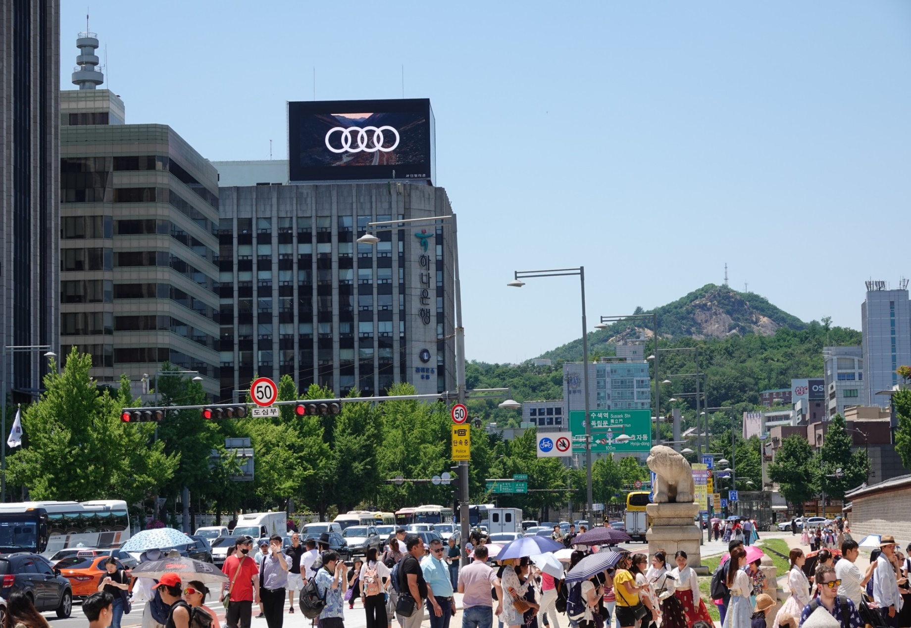

홈 › 옥외광고 가이드 › 경복궁 현대 적선빌딩 전광판
경복궁 적선현대빌딩 전광판 광고 – 위치·광고비·관광 유동 완전정리

경복궁 적선현대빌딩 전광판은 서울 종로구 사직로 130의 19.0×10.0m 옥상형 LED 매체로, 청와대-경복궁-광화문광장-송현동으로 이어지는 국내 최대 관광루트 위에 있습니다. 수문장 교대의식 등으로 하루 약 1만 명이 체류하며, 1일 20초 100회 기준 월 500만 원부터로 가성비가 높습니다.
매체 규격·운영 정보
| 위치 | 서울시 종로구 사직로 130 |
|---|---|
| 매체 규격 | 19.0m × 10.0m (옥상 가로형) |
| 해상도 | 1,120 × 608 px |
| 운영 시간 | 06:00 ~ 24:00 (18시간) |
광고비 (VAT 별도)
| 소재 | 월 | 15일 | 7일 | 3일 | 1일 |
|---|---|---|---|---|---|
| 1일 20초 100회 | 500만원/월 | 250만원/15일 | 140만원/7일 | 60만원/3일 | 상담 |
| 1일 30초 100회 | 700만원/월 | 350만원/15일 | 190만원/7일 | 80만원/3일 | 상담 |
매체 주변 유동인구·교통 (반경 500m)
| 관광루트 | 청와대 개방 K-관광 랜드마크 — 청와대·경복궁·광화문광장·송현동문화공원 연계 |
|---|---|
| 행사 체류 인원 | 광화문 수문장 교대의식 등에 약 1만여 명 체류(행사 시) |
| 복합산업지역 | 금융·경제·언론·문화·쇼핑·관광·관공서 밀집, 외국관광객 1차 관광 포인트 |
데이터 출처 — 일평균 유동인구: 중소벤처기업부 빅데이터플랫폼 소상공인365(SKT 통신사 데이터 2025.10 기준, KT 미반영) · 지하철/버스 승하차: 서울시 열린데이터광장(2025.12 기준) · 교통량: 서울시 교통정보(2025.11 기준)
이 매체가 강한 이유
입지
청와대 개방으로 형성된 관광루트의 핵심. 경복궁·광화문광장·해치마당 등 고궁 관광 1번지.
노출 환경옥상형 대형 LED로 광화문 대로·횡단 구간에서 원거리 주목도 확보.
자주 묻는 질문
경복궁 현대 적선빌딩 전광판 광고 비용은 얼마인가요?
1일 20초 100회 기준 500만원/월이며, 기간(1일·3일·7일·15일·월)과 소재 길이(20초/30초)에 따라 달라집니다. 표기 금액은 모두 VAT 별도 참고가이며 정확한 비용은 상담 시 확정됩니다.
경복궁 현대 적선빌딩 전광판은 며칠부터 집행할 수 있나요?
단기 집행이 가능하며 최소 단위는 60만원/3일부터입니다. 1일·3일·7일·15일·월 단위로 예약할 수 있습니다.
광고 영상 제작과 송출도 대행하나요?
네. 광고플레이는 소재 디자인부터 구좌 예약, 영상 송출, 현장 모니터링, 결과보고까지 원스톱으로 대행합니다.